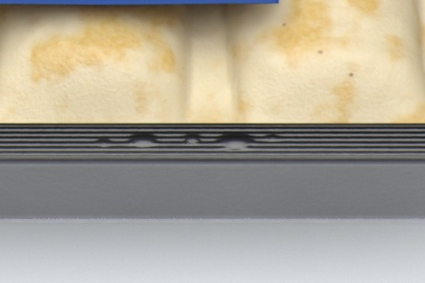
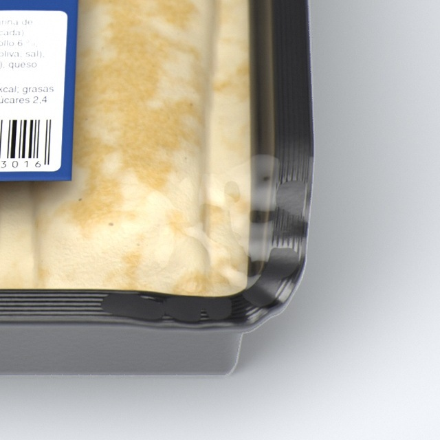
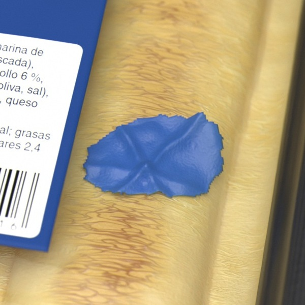
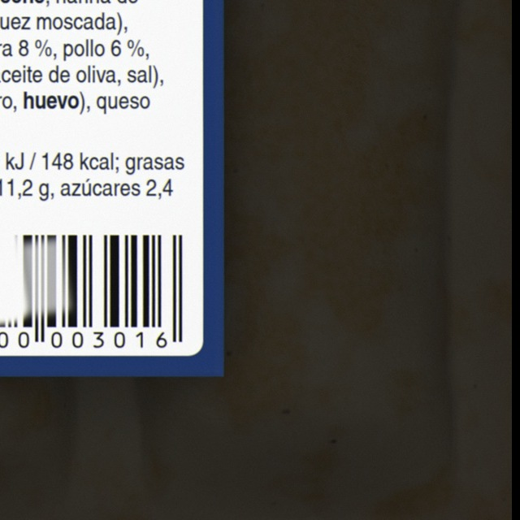
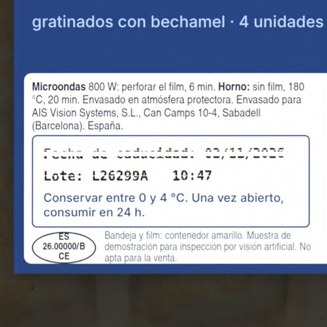
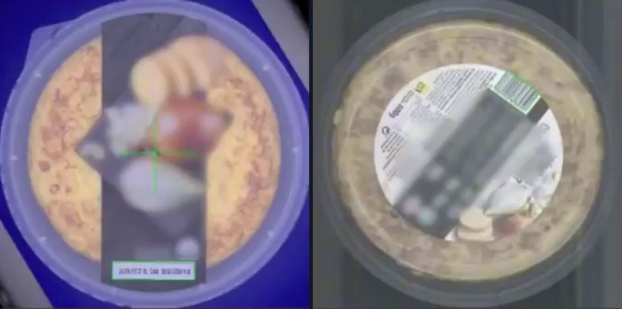

Both sides of each pack, in real time
AIS KARIKÓ detects defects that can affect product safety or appearance and checks that the batch and expiry date are present, legible and correct. The scope of each detection depends on the product, samples and configuration.

Bubbles in the heat seal

Deformation

Foreign bodies

Barcodes

Marking verification

Inspection of both sides
The film and underside are inspected simultaneously. The seal is verified around the entire perimeter and the film reference is checked. Each pack receives an OK or NOK result, and the screen counts defects by type.